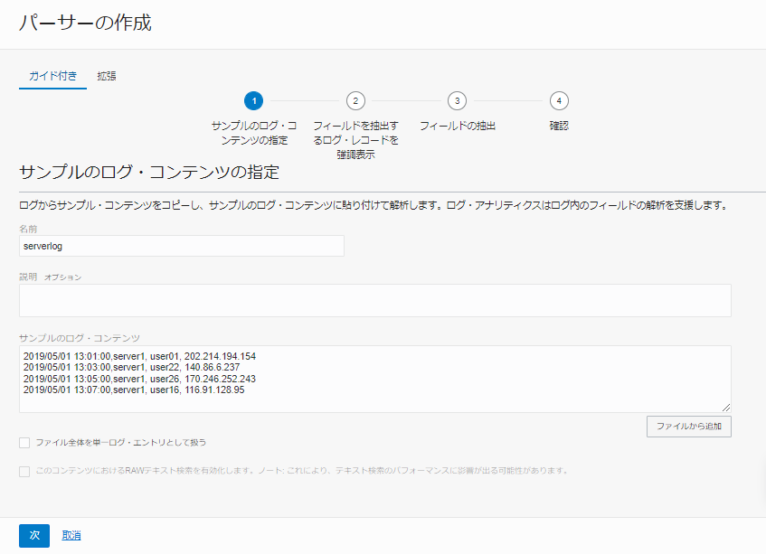
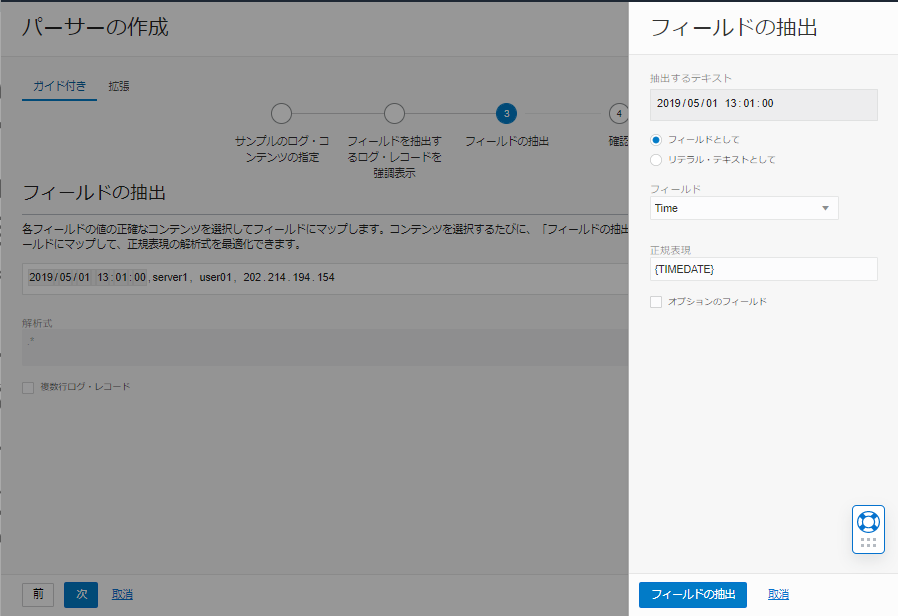

OCI Observability & Management のサービスの1つ、Logging Analyticsでは様々なログを可視化、分析する機能を提供します。OCIのLogging AnalyticsでOCIの監査ログを可視化・分析するでは、事前に定義されていたOCI Audit Logのパーサー（解析文）を使用してOCIの監査ログを解析し、分析しました。 Logging Analyticsでは250種類以上のログのパーサー（解析文）が定義されているため、主要なシステムのログは取り込んですぐに分析することができます。 しかし、万が一分析したいログのパーサー（解析文）が事前に定義されていなくても心配いりません。Logging Analyticsはユーザーがカスタムでパーサーを定義することもできます。 本チュートリアルでは、Logging Analyticsで定義されていないログのパーサーを作成する手順をご紹介します。
所要時間 : 約20分
前提条件 :
- ユーザーがLogging Analyticsを使用するためのポリシーが作成されていること。ポリシーの詳細はOCIのLogging AnalyticsでOCIの監査ログを可視化・分析するもしくは、ドキュメントをご参照ください。
注意 :
- ※チュートリアル内の画面ショットについてはOracle Cloud Infrastructureの現在のコンソール画面と異なっている場合があります。
1. カスタム・パーサーの作成
OCIコンソール → 監視及び管理 → ログ・アナリティクス → 管理 →パーサー → パーサーの作成 → 正規表現タイプ をクリックします。 「パーサーの作成」画面にて、以下情報を入力したら「次」をクリックします
名前- 任意 例)serverlog説明- 任意サンプルのログ・コンテンツ- 以下のログ・コンテンツをコピー＆ペーストします。
2019/05/01 13:01:00,server1, user01, 202.214.194.154
2019/05/01 13:03:00,server1, user22, 140.86.6.237
2019/05/01 13:05:00,server1, user26, 170.246.252.243
2019/05/01 13:07:00,server1, user16, 116.91.128.95

「フィールドを抽出するログ・レコードを強調表示」のステップにて、検出された4行のログレコードのうち、最初のログレコードを選択して「次」をクリックします。

「フィールドの抽出」のステップで、ログコンテンツの最初の日付と日時の部分を選択します。 表示された「フィールドの抽出」画面にて、フィールドから「Time」を選択して「フィールドの抽出」ボタンをクリックします。

同様の手順で以下のフィールドをマッピングします
server1:Server IDuserXX:User NameIPアドレス:Host IP Address(Client)
全てのフィールドを定義したら、パーサー・テストの一致ステータスが全て「Success」となっていることを確認し、「次」をクリックします。

最後の確認のステップの画面下の「パーサーの作成」ボタンをクリックします。

2. ログ・ソースの作成
OCIコンソール → 監視及び管理 → ログ・アナリティクス → 管理 → ソース → ソースの作成をクリックします。 「ユーザー定義ソースの作成」画面にて、以下情報を入力します。
名前- 任意 例)serverlog説明- 任意ソース・タイプ- 今回はログ・ファイルをアップロードするため「File」を選択エンティティ・タイプ- 「Host(Linux)」を選択パーサーの選択- 手順1で作成したログ・パーサーを選択します。
本チュートリアルでは、マップ機能を使用するため、「フィールド・エンリッチメント」のタブを選択し、「追加」ボタンをクリックします。 「フィールド・エンリッチメントの追加」画面にて、以下情報を入力したら、「追加」ボタンをクリックします。
ファンクション- ジオロケーション入力フィールド- Host IP Address (Client)
最後に「ソースの作成」ボタンをクリックして、ソースの作成を終了します。
3. ログの分析
ログ・パーサーとログ・ソースを作成したら、次は実際にログを分析します。 今回はログファイルをアップロードします。アップロードするログ・ファイルはGitHubからダウンロードしてください。
3-1. ログファイルのアップロード
OCIコンソール → 監視及び管理 → ログ・アナリティクス → アップロード → アップロード・ファイルを選択します。 「アップロード・ファイル」画面にて、以下情報を入力したら「次」をクリックします。
名前- 任意ログ・グループ・コンパートメント- ログをアップロードしたいコンパートメントを選択ログ・グループ- 任意（ログ・グループが作成されていない場合、「ログ・グループの作成」からログ・グループを作成してください。）ファイルの選択- Githubからダウンロードしたログファイル「server1.log」と「server2.log」を選択
「プロパティの設定」のステップにて、アップロードするログファイルとログソースを紐付けます。
「server1.log」と「server2.log」を選択し、「プロパティの設定」ボタンをクリックします。
「プロパティの設定」画面にて、ソースから手順2で作成したソース名を選択し、「変更の保存」ボタンをクリックします。

「次」ボタンをクリックし、「確認」のステップ画面にて「アップロード」ボタンをクリックして終了します。

アップロードが成功したら、「閉じる」ボタンをクリックします。
3-2. ログの分析
OCIコンソール → 監視及び管理 → ログ・アナリティクス → 管理 → アップロード → 手順3-1でアップロードしたログファイルを選択し、アップロード詳細画面を表示します。
アップロード詳細画面にて、アップロード名下の「ログ・エクスプローラで開く」ボタンをクリックします。

アップロードしたログが、ログ・エクスプローラに表示されます。ログの分析・可視化・検索等はログ・エクスプローラから実行することが可能です。
-
ビジュアライゼーションメニューから「マップ」を選択すると、各国からのアクセス状況を地図から確認することができます。

-
ビジュアライゼーションメニューから、「ツリーマップ」を選択します。画面一番左にあるフィールドのボックスの「その他」から、「Host IP Address(Client)」をビジュアライゼーションボックスの「グループ化基準」にドラッグ＆ドロップし、「適用」ボタンをクリックします。

サーバーへのアクセス数が多いIPアドレスほど、ボックスが大きく表示されます。

- マップ、ツリーマップ以外にも、折れ線グラフや棒グラフなど、様々な可視化のオプションを提供しています。また、機械学習を用いたクラスタ分析、リンク分析（相関分析）を行うことも可能です。是非、色々な検索機能、可視化機能を試してみてください。